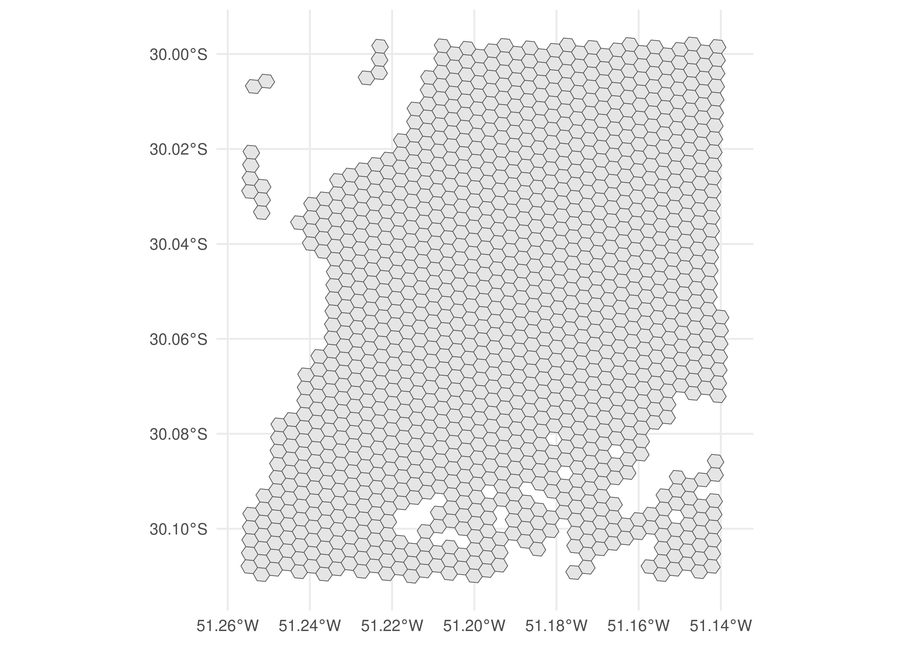
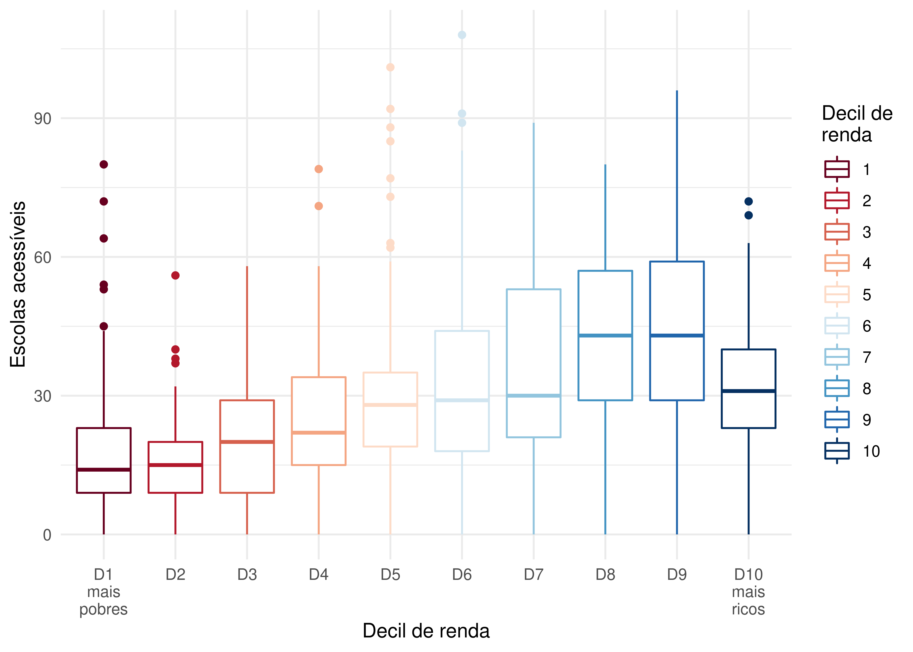

install.packages("r5r")3 Calculando estimativas de acessibilidade em R
3.1 Cálculo da matriz de tempo de viagem
A primeira etapa necessária para estimar os níveis de acessibilidade de uma área de estudo é calcular a matriz de custo de viagem entre as diversas origens e destinos que a compõem. Como comentado anteriormente, na literatura científica e na prática do planejamento de sistemas de transporte esse custo é mais frequentemente representado pelo tempo de viagem que separa dois pontos (El-Geneidy et al. 2016; Venter 2016), embora trabalhos recentes tenham considerado também outros fatores, como o dinheiro necessário para realizar uma viagem e o nível de conforto da viagem entre um ponto e outro (Arbex e Cunha 2020; Herszenhut et al. 2022). Neste livro, iremos nos focar em matrizes de tempo de viagem por serem as mais utilizadas na literatura e na prática, mas iremos cobrir outros tipos de custos num futuro livro sobre análise avançada de acessibilidade em R.
Atualmente, a forma mais fácil e rápida de gerar uma matriz de tempo de viagem em R é utilizando o pacote {r5r} (Pereira et al. 2021), desenvolvido pela equipe do Projeto Acesso a Oportunidades, do Instituto de Pesquisa Econômica Aplicada (Ipea). O pacote utiliza, por trás dos panos, o software de roteamento de transporte multimodal R5, desenvolvido pela Conveyal1.
3.1.1 Instalação do {r5r}
A instalação do {r5r} funciona como a instalação de qualquer pacote de R (todos os exemplos de código a seguir devem ser rodados em uma sessão de R).
Além do R, o pacote {r5r} requer também a instalação do Java 112. Use o comando a seguir para checar a versão do Java instalada em seu computador.
cat(processx::run("java", args = "-version")$stderr)openjdk version "11.0.19" 2023-04-18 LTS
OpenJDK Runtime Environment Zulu11.64+19-CA (build 11.0.19+7-LTS)
OpenJDK 64-Bit Server VM Zulu11.64+19-CA (build 11.0.19+7-LTS, mixed mode)Como podemos ver, a versão instalada no livro é compatível com o {r5r}. Caso a versão instalada na sua máquina não seja (resultado do código mencionando a versão 12 ou 1.8.0, por exemplo), será necessário atualizar o Java para a versão 11.
3.1.2 Dados necessários
O uso do pacote {r5r} requer diferentes tipos de dados. A lista a seguir descreve cada um deles, comenta sobre sua obrigatoriedade e apresenta algumas fontes onde esses dados podem ser obtidos:
-
Rede viária (obrigatório): um arquivo com a rede viária e de infraestrutura de pedestres do OpenStreetMap, em formato
.pbf. Pode ser baixado com:-
{osmextract}, pacote de R; - Geofabrik, website;
- HOT Export Tool, website;
- BBBike Extract Service, website.
-
Qualidade dos dados do OpenStreetMap
O OpenStreetMap (OSM) é uma base de dados geográfica que traz informações sobre malha viária, prédios, parques etc. Por ser uma base de dados alimentada voluntariamente pela comunidade que a utiliza, a cobertura e a qualidade dos dados do OSM podem variar muito entre regiões (Barrington-Leigh e Millard-Ball 2017). Via de regra, os dados do OSM no Brasil e no mundo tendem a ter melhor cobertura e qualidade em regiões mais desenvolvidas e áreas urbanas com grandes populações (Barrington-Leigh e Millard-Ball 2017; Camboim, Bravo, e Sluter 2015).
-
Rede de transporte público (opcional): um ou mais arquivos GTFS descrevendo a rede de transporte público da área de estudo. Caso ausente, deslocamentos por transporte público não são considerados no cálculo da matriz de tempo de viagem. Esses dados podem ser baixados com:
-
{tidytransit}, pacote de R; - Transitland, website;
- No Capítulo 4 deste livro (Tabela 4.9) indicamos também onde baixar dados GTFS de algumas cidades brasileiras que compartilham seus dados publicamente.
-
-
Topografia (opcional): um arquivo de dados raster contendo o modelo digital de elevação da área de estudo em formato
.tif/.tiff. Deve ser utilizado caso se deseje levar em consideração os efeitos da topografia do local sobre os tempos de caminhada e de viagens de bicicleta. Pode ser baixado com:
Esses dados devem ser salvos em uma mesma pasta que, preferencialmente, não contenha nenhum outro arquivo. Como veremos adiante, o {r5r} combina todos os dados salvos nessa pasta para criar uma rede de transporte multimodal que é utilizada no roteamento de viagens entre pares origem-destino e, consequentemente, no cálculo das matrizes de tempo de viagem. Note que é possível ter mais de um arquivo GTFS na mesma pasta: nesse caso, o {r5r} considera as redes de transporte público de todos os feeds de forma conjunta. No entanto, a rede viária e a topografia da área de estudo devem ser descritas por um único arquivo cada. Assumindo que os scripts de R estejam em uma pasta chamada R, uma possível organização dos arquivos segue o esquema a seguir:
/tmp/RtmpcTb8hE/projeto_acessibilidade
├── R
│ ├── script1.R
│ └── script2.R
└── r5
├── rede_transporte_publico.zip
├── rede_viaria.osm.pbf
└── topografia.tifPara ilustrar as funcionalidades do {r5r}, vamos usar uma pequena amostra de dados da cidade de Porto Alegre (Brasil). Esses dados estão disponíveis dentro do próprio pacote {r5r}, e seu endereço pode ser acessado com o comando a seguir:
pasta <- system.file("extdata/poa", package = "r5r")
pasta[1] "/home/runner/work/intro_access_book/intro_access_book/renv/library/R-4.3/x86_64-pc-linux-gnu/r5r/extdata/poa"fs::dir_tree(pasta)/home/runner/work/intro_access_book/intro_access_book/renv/library/R-4.3/x86_64-pc-linux-gnu/r5r/extdata/poa
├── poa_elevation.tif
├── poa_eptc.zip
├── poa_hexgrid.csv
├── poa_osm.pbf
├── poa_points_of_interest.csv
└── poa_trensurb.zipEsta pasta possui cinco arquivos que vamos utilizar ao longo deste capítulo:
- A rede viária do OSM:
poa_osm.pbf; - Um feed de GTFS descrevendo algumas linhas da rede de ônibus da cidade:
poa_eptc.zip; - Um feed de GTFS descrevendo algumas linhas da rede de trem da cidade:
poa_trensurb.zip; - O modelo digital de elevação da cidade:
poa_elevation.tif; e - O arquivo
poa_hexgrid.csv, com as coordenadas geográficas dos centroides de uma grade hexagonal regular que cobre toda a área de estudo e com informações sobre o tamanho da população residente e o número de empregos, hospitais e escolas em cada hexágono. Esses pontos serão utilizados como as origens e os destinos no cálculo da matriz de tempo de viagem.
3.1.3 Calculando a matriz de tempo de viagem
Antes de calcular a matriz de tempo de viagem, precisamos aumentar a memória disponível para a execução de processos do Java, linguagem em que o R5 é escrito. Isso é necessário porque, por padrão, o R aloca apenas 512 MB de memória para processos do Java, o que frequentemente não é suficiente para o cálculo de grandes matrizes com o {r5r}. Para aumentar a memória disponível para 2 GB, por exemplo, usamos o seguinte comando no início do script, antes mesmo de carregar as bibliotecas de R necessárias para a nossa análise:
options(java.parameters = "-Xmx2G")Feito isso, podemos prosseguir com o cálculo da matriz de tempo de viagem, realizado em dois passos. O primeiro é gerar a rede de transporte multimodal que será utilizada no roteamento. Para isso, carregamos a biblioteca {r5r} e utilizamos a função setup_r5(), que baixa o software de roteamento R5 e o utiliza para criar a rede. Essa função recebe como input o caminho da pasta onde os dados necessários para o roteamento estão armazenados. Como resultado, a função salva na pasta alguns arquivos necessários para o roteamento e retorna uma conexão com o R5, que nesse exemplo foi armazenada na variável conexao_r5r. Essa conexão é responsável por garantir que o roteamento seja feito com a rede de transportes descrita pelos arquivos dentro da pasta e é utilizada no cálculo da matriz de tempo de viagem.
library(r5r)
conexao_r5r <- setup_r5(pasta, verbose = FALSE)
fs::dir_tree(pasta)/home/runner/work/intro_access_book/intro_access_book/renv/library/R-4.3/x86_64-pc-linux-gnu/r5r/extdata/poa
├── fares
│ └── fares_poa.zip
├── network.dat
├── network_settings.json
├── poa_elevation.tif
├── poa_eptc.zip
├── poa_hexgrid.csv
├── poa_osm.pbf
├── poa_osm.pbf.mapdb
├── poa_osm.pbf.mapdb.p
├── poa_points_of_interest.csv
└── poa_trensurb.zipO passo final consiste em calcular a matriz de tempo de viagem com a função travel_time_matrix(). Como inputs básicos, a função recebe a conexão com o R5 criada no passo anterior, pontos de origem e destino em formato data.frame com as colunas id, lon e lat, o modo de transporte a ser utilizado, o horário de partida, o tempo máximo de caminhada permitido da origem até o embarque no transporte público e do desembarque até o destino e o tempo máximo de viagem a ser considerado. Diversos outros inputs também podem ser usados, como a velocidade de caminhada e o número máximo de pernas de transporte público permitido, entre outros3.
pontos <- data.table::fread(file.path(pasta, "poa_hexgrid.csv"))
matriz <- travel_time_matrix(
conexao_r5r,
origins = pontos,
destinations = pontos,
mode = c("WALK", "TRANSIT"),
departure_datetime = as.POSIXct(
"13-05-2019 14:00:00",
format = "%d-%m-%Y %H:%M:%S"
),
max_walk_time = 30,
max_trip_duration = 120,
verbose = FALSE,
progress = FALSE
)
head(matriz) from_id to_id travel_time_p50
1: 89a901291abffff 89a901291abffff 1
2: 89a901291abffff 89a9012a3cfffff 71
3: 89a901291abffff 89a901295b7ffff 41
4: 89a901291abffff 89a901284a3ffff 57
5: 89a901291abffff 89a9012809bffff 43
6: 89a901291abffff 89a901285cfffff 35Na prática, a função travel_time_matrix() encontra a rota mais rápida partindo de cada ponto de origem para todos os possíveis pontos de destino, considerando o modo de viagem, o horário de partida e os demais parâmetros passados pelo usuário. Para isso, o {r5r} considera tempos de viagem de porta a porta: no caso de uma viagem por transporte público, por exemplo, o tempo total de viagem inclui: i) o tempo de caminhada até a parada de transporte público; ii) o tempo de espera pelo veículo na parada; iii) o tempo de deslocamento dentro do veículo; e iv) o tempo de viagem a pé da parada de desembarque até o destino. Em casos em que mais de uma rota de transporte público é utilizada, o {r5r} também contabiliza o tempo gasto nas conexões, considerando a caminhada entre paradas e o tempo de espera pelo próximo veículo.
A função travel_time_matrix() utiliza uma extensão do algoritmo de roteamento RAPTOR (Conway, Byrd, e van der Linden 2017), o que torna o R5 extremamente rápido. A depender da quantidade de pares origem-destino, o {r5r} pode ser entre 6 e 200 vezes mais rápido do que outros softwares de roteamento multimodal no cálculo de matrizes de tempo de viagem (Higgins et al. 2022).
3.2 Cálculo de acessibilidade
Calculada a matriz de tempo de viagem entre as origens e os destinos da área de estudo, precisamos utilizá-la para calcular os níveis de acessibilidade do local. Para isso, utilizaremos o pacote {accessibility}4, também desenvolvido pela equipe do Projeto Acesso a Oportunidades/Ipea, que disponibiliza funções para o cálculo de vários indicadores de acessibilidade. Como input básico, todas as funções requerem uma matriz de custo pré-calculada (no nosso caso, a matriz de tempo de viagem calculada na seção anterior) e dados de uso do solo, como o número de determinados tipos de oportunidades em cada célula da grade que cobre a área de estudo.
3.2.1 Medida de oportunidades cumulativas
A função cumulative_cutoff() é utilizada para calcular o número de oportunidades que podem ser alcançadas em um determinado limite de custo de viagem. No exemplo a seguir, primeiro carregamos a biblioteca {accessibility} e adequamos a nossa matriz para que ela possa ser utilizada no cálculo da acessibilidade. Em seguida, calculamos o número de escolas que podem ser alcançadas em até 30 minutos de viagem a partir de cada origem presente em nossa matriz de tempo de viagem.
library(accessibility)
# renomeia coluna para usar o pacote {accessibility}
data.table::setnames(matriz, "travel_time_p50", "travel_time")
oportunidades_cumulativas <- cumulative_cutoff(
travel_matrix = matriz,
land_use_data = pontos,
opportunity = "schools",
travel_cost = "travel_time",
cutoff = 30
)
head(oportunidades_cumulativas) id schools
1: 89a901291abffff 23
2: 89a9012a3cfffff 0
3: 89a901295b7ffff 18
4: 89a901284a3ffff 4
5: 89a9012809bffff 20
6: 89a901285cfffff 843.2.2 Custo mínimo de viagem
A função cost_to_closest(), por sua vez, calcula o custo mínimo de viagem necessário para alcançar um determinado número de oportunidades. Com o código a seguir, por exemplo, calculamos o tempo de viagem mínimo para alcançar a escola mais próxima a partir de cada origem.
custo_minimo <- cost_to_closest(
travel_matrix = matriz,
land_use_data = pontos,
opportunity = "schools",
travel_cost = "travel_time"
)
head(custo_minimo) id travel_time
1: 89a9012124fffff 0
2: 89a9012126bffff 16
3: 89a9012127bffff 14
4: 89a90128003ffff 7
5: 89a90128007ffff 15
6: 89a9012800bffff 03.2.3 Medidas gravitacionais
A função gravity() calcula medidas gravitacionais de acessibilidade, aquelas nas quais o peso de cada oportunidade diminui gradualmente com o aumento do custo de viagem. Existe, no entanto, uma gama de diferentes tipos de funções de decaimento que podem ser utilizadas, como funções de decaimento exponenciais negativas, de potências inversas, entre outras. Por isso, essa função recebe um input adicional: a função de decaimento a ser utilizada no cálculo. O exemplo adiante apresenta o cálculo de acessibilidade a estabelecimentos de educação usando uma medida gravitacional exponencial negativa com parâmetro de decaimento igual a 0,2.
grav_exp_negativa <- gravity(
travel_matrix = matriz,
land_use_data = pontos,
opportunity = "schools",
travel_cost = "travel_time",
decay_function = decay_exponential(0.2)
)
head(grav_exp_negativa) id schools
1: 89a901291abffff 0.428108826
2: 89a9012a3cfffff 0.003987477
3: 89a901295b7ffff 0.606786304
4: 89a901284a3ffff 0.079661746
5: 89a9012809bffff 0.494632773
6: 89a901285cfffff 1.9876571343.2.4 Medidas com competição
Por fim, a função floating_catchment_area() calcula níveis de acessibilidade levando em consideração a competição por oportunidades usando diferentes indicadores do tipo floating catchment area (FCA), “área de influência flutuante”. Como diversos métodos de FCA podem ser utilizados, a função requer que o método desejado seja explicitamente assinalado. E, assim como a função de acessibilidade gravitacional, a função de decaimento utilizada também deve ser definida pelo usuário. O código a seguir mostra um exemplo de cálculo de acessibilidade a estabelecimentos de saúde usando o método balanced floating catchment area (BFCA) (Paez, Higgins, e Vivona 2019), levando em consideração os efeitos de competição entre a população como um todo e uma função de decaimento exponencial com parâmetro de decaimento igual a 0,05.
competicao_bfca <- floating_catchment_area(
travel_matrix = matriz,
land_use_data = pontos,
opportunity = "schools",
travel_cost = "travel_time",
demand = "population",
method = "bfca",
decay_function = decay_exponential(0.05)
)
head(competicao_bfca) id schools
1: 89a901291abffff 2.628973e-04
2: 89a9012a3cfffff 5.875302e-05
3: 89a901295b7ffff 2.123543e-04
4: 89a901284a3ffff 1.414356e-04
5: 89a9012809bffff 2.254543e-04
6: 89a901285cfffff 3.901031e-04As funções apresentadas nesta seção também podem receber outros inputs não explicitamente mencionados aqui. Para mais informações sobre cada um dos parâmetros, por favor consulte a documentação do pacote {accessibility} em seu site.
3.2.5 Cálculo de acessibilidade com o {r5r}
Ao longo das duas seções anteriores, mostramos como calcular níveis de acessibilidade passo a passo. Para fins didáticos, é importante entender que o cálculo de estimativas de acessibilidade tem como primeiro passo a geração de uma matriz de custos de viagens que, em seguida, é utilizada para estimar níveis de acessibilidade. No entanto, o {r5r} inclui também uma função chamada accessibility() que calcula os níveis de acessibilidade com uma única chamada, sem etapas intermediárias.
De forma parecida com a função de cálculo de matriz de tempo de viagem, a função accessibility() recebe como inputs uma conexão com o R5, as origens, os destinos, os modos de transporte e o tempo de partida, entre outros argumentos. Adicionalmente, devem ser listadas também quais oportunidades devem ser consideradas e a função de decaimento que deve ser utilizada, bem como o valor do limite de custo e do parâmetro de decaimento. O exemplo a seguir mostra uma aplicação dessa função.
acessibilidade_r5r <- accessibility(
conexao_r5r,
origins = pontos,
destinations = pontos,
opportunities_colname = "schools",
decay_function = "step",
cutoffs = 30,
mode = c("WALK", "TRANSIT"),
departure_datetime = as.POSIXct(
"13-05-2019 14:00:00",
format = "%d-%m-%Y %H:%M:%S"
),
max_walk_time = 30,
max_trip_duration = 120,
verbose = FALSE,
progress = FALSE
)
head(acessibilidade_r5r) id opportunity percentile cutoff accessibility
1: 89a901291abffff schools 50 30 21
2: 89a9012a3cfffff schools 50 30 0
3: 89a901295b7ffff schools 50 30 16
4: 89a901284a3ffff schools 50 30 4
5: 89a9012809bffff schools 50 30 17
6: 89a901285cfffff schools 50 30 78Uma pequena diferença entre o comportamento da função r5r::accessibility() e o da cumulative_cutoff() do pacote {accessibility} está no fato de que, nesta, pares origem-destino cujos tempos de viagem são iguais ao valor definido como limite são excluídos do cálculo da acessibilidade, enquanto na função do pacote {accessibility} eles são incluídos. Ou seja, para simularmos o cálculo acima com a cumulative_cutoff(), precisamos estabelecer um tempo de viagem limite de 29 minutos, e não trinta. No código a seguir, comparamos os resultados das duas funções.
ops_cumulativas_29 <- cumulative_cutoff(
travel_matrix = matriz,
land_use_data = pontos,
opportunity = "schools",
travel_cost = "travel_time",
cutoff = 29
)
# compara os niveis de acessibilidade calculados das duas maneiras distintas
comparacao_acessibilidade <- merge(
acessibilidade_r5r,
ops_cumulativas_29,
by = "id"
)
# renomeia colunas com niveis de acessibilidade
data.table::setnames(
comparacao_acessibilidade,
old = c("accessibility", "schools"),
new = c("acesso_r5r", "acesso_accessibility")
)
head(comparacao_acessibilidade[, .(id, acesso_r5r, acesso_accessibility)]) id acesso_r5r acesso_accessibility
1: 89a9012124fffff 1 1
2: 89a9012126bffff 12 12
3: 89a9012127bffff 14 14
4: 89a90128003ffff 30 30
5: 89a90128007ffff 21 21
6: 89a9012800bffff 29 29Como podemos observar, fora a pequena diferença de comportamento, o resultado das duas funções é o mesmo. A principal diferença entre os dois métodos, no entanto, é que a informação “intermediária” do tempo de viagem entre origens e destinos não fica disponível ao usuário com o uso da função accessibility() do pacote {r5r}. Ainda assim, esse fluxo de trabalho pode ser uma boa alternativa para pessoas que estejam interessadas unicamente nos níveis de acessibilidade, não dependendo do tempo de viagem em suas análises. Note também que o pacote {accessibility} possui uma gama mais ampla de indicadores de acessibilidade e permite que os usuários definam funções de decaimento personalizadas.
Considerando outros tipos de custo de viagem no cálculo da acessibilidade
Outra diferença entre a função de acessibilidade do {r5r} e as funções do pacote {accessibility} está no fato de que estas podem trabalhar com variados tipos de custo de viagem, como tempo, custo monetário, conforto, etc. A função do {r5r}, porém, é menos flexível, limitando-se a considerar apenas restrições de tempo de viagem.
3.3 Análises de acessibilidade
Calculados os níveis de acessibilidade, seguimos então para sua análise. Existe uma grande variedade de análises que podem ser feitas usando esses dados: por exemplo, diagnósticos das condições de acessibilidade urbana de diferentes bairros, pesquisas sobre desigualdades de acesso a oportunidades entre diferentes grupos sociais, análises sobre exclusão social e accessibility poverty (insuficiência de acessibilidade) etc. Nesta seção, no entanto, apresentaremos apenas duas análises relativamente simples e de fácil comunicação: a distribuição espacial da acessibilidade e sua distribuição entre diferentes grupos de renda.
3.3.1 Distribuição espacial de acessibilidade urbana
Para compreendermos a distribuição espacial da acessibilidade urbana de uma determinada cidade ou região, primeiro precisamos obter as informações espaciais dos pontos que foram utilizados como origens e destinos no cálculo da matriz. Os pontos que usamos nos exemplos anteriores, por exemplo, correspondem aos centroides de células de uma grade hexagonal baseadas no índice H3, desenvolvido pela Uber (Brodsky 2018). A grade de Porto Alegre e algumas informações sociodemográficas e de uso do solo da cidade são disponibilizadas pela equipe do Projeto Acesso a Oportunidades através do pacote de R {aopdata}. O pacote e suas funções são apresentados em detalhes na Seção 5. Com o código adiante, carregamos a biblioteca de visualização de dados, baixamos as informações espaciais da grade e as apresentamos em forma de mapa.
library(ggplot2)
# baixa a grade espacial
grade_poa <- aopdata::read_grid(city = "Porto Alegre")
# mantem na grade apenas os hexagonos utilizados na analise
grade_poa <- subset(grade_poa, id_hex %in% pontos$id)
# visualizando o mapa
ggplot(grade_poa) + geom_sf() + theme_minimal()
Para visualizarmos os dados de acessibilidade espacialmente, precisamos unir a tabela de estimativas de acessibilidade (considerando os níveis calculados com a medida de oportunidades cumulativas) com a tabela que contém os dados espaciais da grade, usando as colunas de identificação dos hexágonos como colunas-chave. Essa operação e seu resultado em formato de mapa são apresentados a seguir.
# junta as tabelas de dados espaciais e de niveis de acessibilidade
acesso_espacial <- merge(
grade_poa,
oportunidades_cumulativas,
by.x = "id_hex",
by.y = "id"
)
# configura mapa
ggplot(acesso_espacial) +
geom_sf(aes(fill = schools), color = NA) +
scale_fill_viridis_c(option = "inferno") +
labs(fill = "Núm. de escolas\nacessíveis") +
theme_minimal()
Como podemos ver, os níveis de acessibilidade tendem a se concentrar de forma mais acentuada no centro da cidade, onde existe maior concentração de escolas, e próximos aos grandes corredores de transporte da cidade. Por terem fácil acesso a modos de alta capacidade e velocidade, pessoas que moram mais perto desses corredores tendem a acessar locais distantes de forma relativamente rápida. Em contraste, pessoas que moram mais afastadas desses corredores dependem de modos de menor menor frequência e velocidade operacional (como os ônibus municipais, por exemplo) e precisam gastar mais tempo para alcançar os corredores de média e alta capacidade. Como consequência, os níveis de acessibilidade de pessoas que moram afastadas do centro e de corredores de alta capacidade tendem a ser menores.
3.3.2 Distribuição socioeconômica de acessibilidade urbana
A Figura 3.2, embora seja reveladora quanto aos locais em que estão dispostas as maiores concentrações de acessibilidade, nada mostra sobre os grupos socioeconômicos que possuem os maiores potenciais de acesso a oportunidades na região. Para isso, precisamos cruzar as informações demográficas e econômicas das pessoas que moram em cada um dos pontos de origem com os dados de acessibilidade previamente calculados.
No exemplo abaixo, juntamos aos dados de acessibilidade a informação do decil de renda de cada uma das origens, considerando a renda média de cada uma das pessoas que as habitam (dado também proveniente do pacote {aopdata}). Assim, conseguimos identificar se um hexágono é de baixa, média ou alta renda.
populacao_poa <- aopdata::read_population("Porto Alegre", showProgress = FALSE)
# renomeia colunas com contagem populacional e decil de renda
data.table::setnames(
populacao_poa,
old = c("P001", "R003"),
new = c("contagem_pop", "decil")
)
# junta as tabelas de niveis de acessibilidade espacializados e dados sociodem.
acesso_sociodemografico <- merge(
acesso_espacial,
populacao_poa,
by = "id_hex"
)
head(acesso_sociodemografico[, c("id_hex", "schools", "contagem_pop", "decil")])Simple feature collection with 6 features and 4 fields
Geometry type: POLYGON
Dimension: XY
Bounding box: xmin: -51.25678 ymin: -30.1111 xmax: -51.19031 ymax: -30.06699
Geodetic CRS: WGS 84
id_hex schools contagem_pop decil geometry
1 89a9012124fffff 1 733 9 POLYGON ((-51.25083 -30.111...
2 89a9012126bffff 13 355 9 POLYGON ((-51.25369 -30.106...
3 89a9012127bffff 14 996 10 POLYGON ((-51.2538 -30.1094...
4 89a90128003ffff 34 1742 4 POLYGON ((-51.19446 -30.071...
5 89a90128007ffff 23 477 5 POLYGON ((-51.19744 -30.069...
6 89a9012800bffff 34 501 4 POLYGON ((-51.19137 -30.070...Tendo a informação do decil de renda em que cada hexágono se encontra, podemos calcular a distribuição da acessibilidade da população dentro de cada um desses níveis de renda. Para isso, precisamos ponderar o nível de acessibilidade de cada origem pela quantidade de pessoas que residem ali - daí o porquê de termos também trazido a informação da contagem populacional em cada hexágono. Fazendo a ponderação, obtemos a distribuição da acessibilidade das pessoas localizadas em origens de um determinado decil de renda. Caso não ponderássemos, no entanto, teríamos a distribuição de acessibilidade não das pessoas localizadas em cada hexágono, mas dos hexágonos em si. Como em nossa análise nos importamos com as pessoas, e não com as unidades espaciais em que elas estão agregadas, precisamos fazer a ponderação. Podemos visualizar a distribuição de acessibilidade de cada decil usando um box plot, como mostrado a seguir.
ggplot(subset(acesso_sociodemografico, !is.na(decil))) +
geom_boxplot(
aes(
x = as.factor(decil),
y = schools,
color = as.factor(decil),
weight = contagem_pop
)
) +
labs(
color = "Decil de\nrenda",
x = "Decil de renda",
y = "Número de escolas\nacessíveis"
) +
scale_color_brewer(palette = "RdBu") +
scale_x_discrete(
labels = c("D1\nmais\npobres", paste0("D", 2:9), "D10\nmais\nricos")
) +
theme_minimal()
A Figura 3.3 é muito clara em seu conteúdo: pessoas de mais baixa renda tendem a ter níveis de acessibilidade consideravelmente menores do que as de alta renda. Esse é um padrão comum em praticamente todas as cidades brasileiras (Pereira et al. 2019) que ocorre, em larga medida, devido à localização espacial das comunidades de baixa e alta renda no território: os mais ricos costumam morar em áreas mais valorizadas, próximas das grandes concentrações de empregos (e oportunidades de educação, saúde, lazer etc) e com maior oferta de transporte público de média e alta capacidade. Os mais pobres, por sua vez, tendem a morar em locais mais afastados, onde o valor da terra é menor. Consequentemente, tendem também a se afastar das grandes concentrações de oportunidades. Junta-se a isso o fato de, na maior parte dos casos, a oferta de serviços de transporte público de média e alta capacidade ser pior em locais com maior concentração de pessoas de baixa renda. Sendo assim, seus níveis de acessibilidade são, em média, muito menores do que os dos mais ricos, como indicado pelos dados apresentados.
Disponível em https://github.com/conveyal/r5.↩︎
O Java 11 pode ser baixado em https://www.oracle.com/java/technologies/downloads/#java11 ou em https://jdk.java.net/java-se-ri/11.↩︎
Para mais informações sobre cada um dos parâmetros, consulte a documentação da função em uma sessão de R (com os comandos
?travel_time_matrix()ouhelp(“travel_time_matrix”)) ou no site do{r5r}, neste link.↩︎Disponível em https://github.com/ipeaGIT/accessibility.↩︎